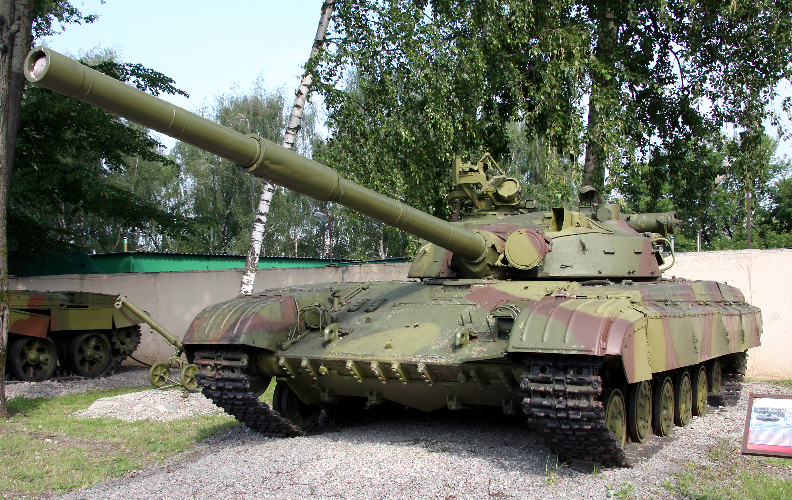
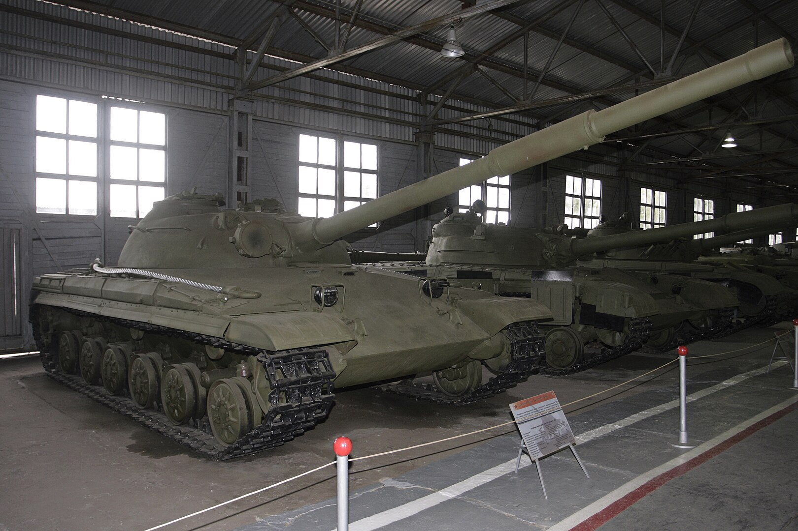
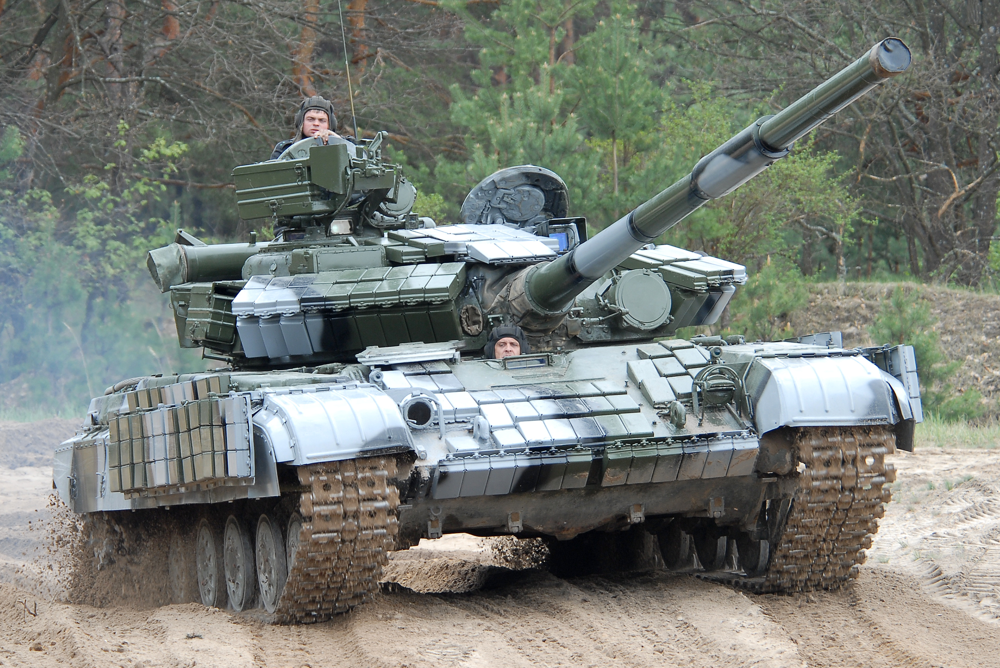
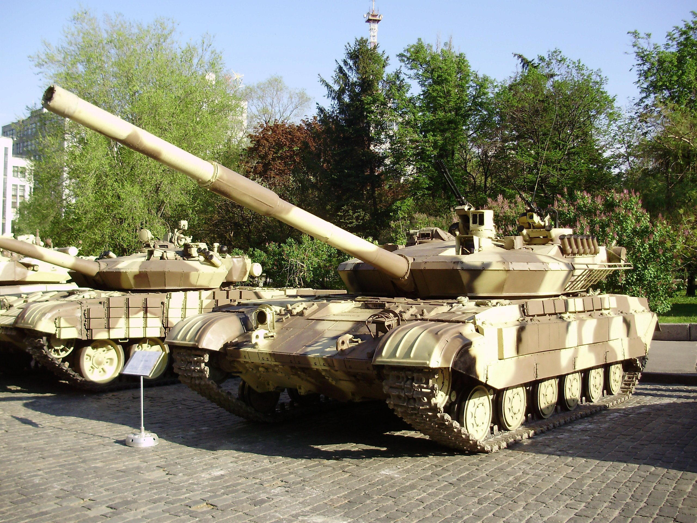
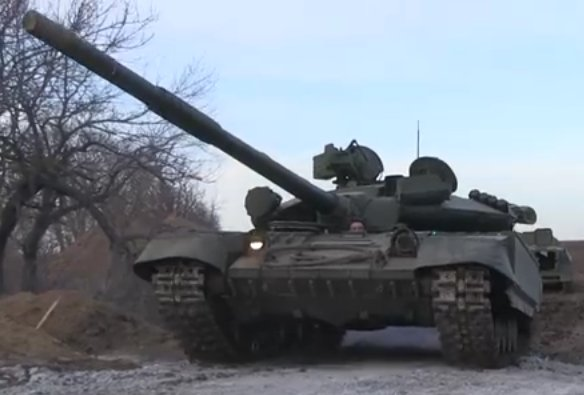
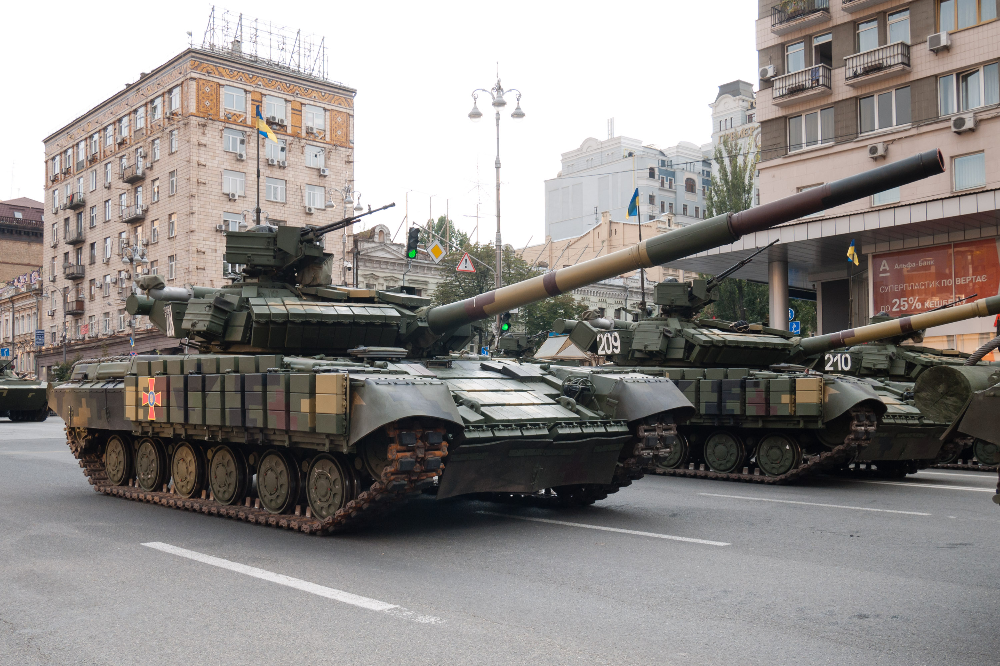
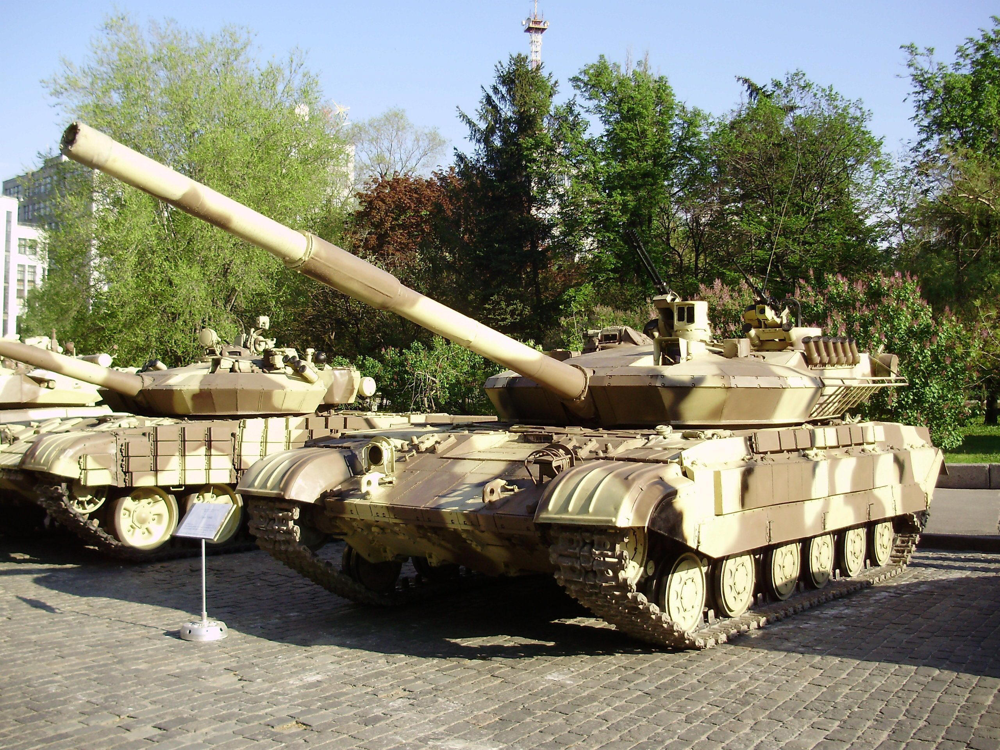
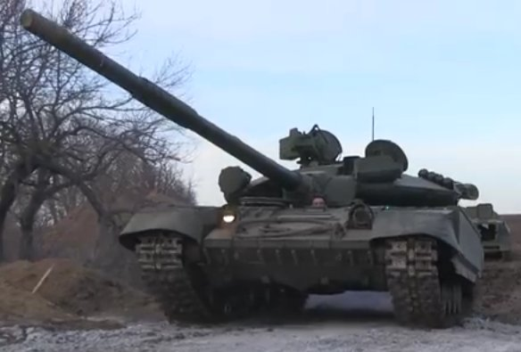
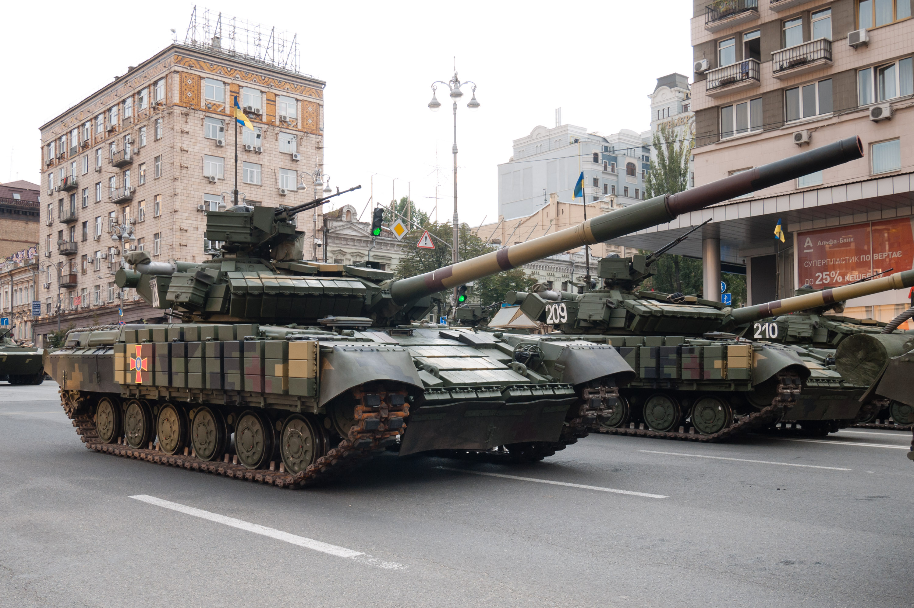

T-64
Це сімейство основних бойових танків другого покоління, що випускалися серійно в СРСР з 1963 по 1987 рік. За цей час було створено близько трьох десятків різних модифікацій танка. Роботи над створенням танка розпочалися в Харкові в 1951 році під керівництвом Олександра Морозова[1]. Перша модифікація — «середній танк Т-64» (об'єкт 432) була прийнята на озброєння в січні 1967 року,[2] модифікація Т-64А (об'єкт 434) стала першим основним бойовим танком Радянського Союзу. Конструкція Т-64 увібрала в себе найновіші розробки того часу, завдяки чому танк з вагою середнього отримав вогневу потужність важкого. Тут вперше була використана композитна броня, стереоскопічний далекомір, опозитний дизельний двигун, гладкоствольна гармата здатна вести вогонь керованими реактивними снарядами[3], вперше для гармати великого калібру встановленій на танк традиційного компонування був створений механізм заряджання, завдяки якому екіпаж скоротився до трьох осіб[4]. Компонування та окремі елементи конструкції були потім використані в танках Т-72, Т-80 та Т-84. Через високу секретність танки Т-64 Радянський Союз на експорт не постачав, і в збройних конфліктах вони участі не брали. Найпе́рше, танки Т-64 всіх модифікацій надходили на озброєння танкових підрозділів Радянської армії, дислокованих в Групі радянських військ у Німеччині. Навіть на військових парадах в Москві танки Т-64 брали участь лише один раз — 9 травня 1985 року[5]. Бойове хрещення відбулось вже після розпаду Радянського Союзу — в боях за місто Бендери під час Придністровського конфлікту в 1992 році[5].
Історія створення
Перші серійні об'єк 
Модифікації
Танк Т-64А («Об'єкт 434») с Т-64АК (об'єкт 446) — Т-64Б (об'єкт 447А) — Т-64БК (об'єкт 446Б) — командирський варіант Т-64Б, відрізнявся наявністю другої антени на башті. Прийнятий на озброєння у 1976 році. Т-64Б1 (об'єкт 447А) — модифікація Т-64Б, розроблена у 1975 році. Основна відмінність — відсутність комплексу керованої зброї «Кобра». Випускався з 1976 року, мав новий механізм заряджання та нову радіостанцію Р-173. Т-64БВ (об'єкт 447АМ-1) — модифікація з динамічним захистом «Контакт-1», прийнята на озброєння у 1985 році. Перші експерименти з динамічним захистом почалися ще у 1977 році, і в результаті танк Т-64БВ отримав покращений захист від кумулятивних боєприпасів.
Українські модифікації танку
Т-64БМ1 (об'єкт 447АМ1)
Т-64БМ1, або Т-64У (об'єкт 447АМ1), —
Т-64БМ2 (об'єкт 447АМ2)
Т-64БМ2 (об'єкт 447АМ2) —
БМ «Булат»
БМ «Булат» (об'єкт 447АМ1-1) —
.jpg) Т-64Е
Т-64Е — це концепт модернізації танка зі встановленим двигуном 5ТДФЕ потужністю 850 к.с. Особливістю є додатковий модуль з двома спареними 23 мм автоматичними гарматами ГШ-23, що дозволяє вести вогонь на відстань до 5000 метрів керованими ракетами «Комбат».

Т-64БВ-1
Т-64БВ-1 — спрощений варіант модернізації танків Т-64Б1, розроблений у 2014 році. Танк оснащений динамічним захистом «Ніж», двигуном 5ТДФ, а також модернізованими системами захисту і управління. Перші танки надійшли до Національної гвардії України у 2014 році.

Т-64БВ зразка 2017 року
У 2017 році Україна модернізувала танки Т-64БВ. Модернізація включала нові нічні приціли, системи супутникової навігації СН-4215, радіостанції з радіусом дії до 70 км та посилений захист бронею. Понад 200 танків цієї модифікації надійшли до ЗСУ до 2020 року.

Т-64БМ2 «Булат» (програма «Кедр»)
Т-64БМ2 (також відомий як «Кедр») є модернізацією танка Т-64 за програмою «Кедр». Основні зміни включають установку нового двигуна 6ТД-1 (1000 к.с.) та тепловізійного прицілу. Модернізація покращує рухомість, бойову ефективність і захист танка.
Т-64Е
Т-64Е — це концепт модернізації танка зі встановленим двигуном 5ТДФЕ потужністю 850 к.с. Особливістю є додатковий модуль з двома спареними 23 мм автоматичними гарматами ГШ-23, що дозволяє вести вогонь на відстань до 5000 метрів керованими ракетами «Комбат».

Т-64БВ-1
Т-64БВ-1 — спрощений варіант модернізації танків Т-64Б1, розроблений у 2014 році. Танк оснащений динамічним захистом «Ніж», двигуном 5ТДФ, а також модернізованими системами захисту і управління. Перші танки надійшли до Національної гвардії України у 2014 році.

Т-64БВ зразка 2017 року
У 2017 році Україна модернізувала танки Т-64БВ. Модернізація включала нові нічні приціли, системи супутникової навігації СН-4215, радіостанції з радіусом дії до 70 км та посилений захист бронею. Понад 200 танків цієї модифікації надійшли до ЗСУ до 2020 року.

Т-64БМ2 «Булат» (програма «Кедр»)
Т-64БМ2 (також відомий як «Кедр») є модернізацією танка Т-64 за програмою «Кедр». Основні зміни включають установку нового двигуна 6ТД-1 (1000 к.с.) та тепловізійного прицілу. Модернізація покращує рухомість, бойову ефективність і захист танка.
.jpg) Т-64БВК зразка 2021 року
Т-64БВК —
Т-64БВ зразка 2022 року
У 2022 році модернізовані Т-64БВ отримали нові прилади спостереження, протикумулятивні екрани, гумові щитки на башті та удосконалену паливну систему.
Т-64БВК зразка 2021 року
Т-64БВК —
Т-64БВ зразка 2022 року
У 2022 році модернізовані Т-64БВ отримали нові прилади спостереження, протикумулятивні екрани, гумові щитки на башті та удосконалену паливну систему.